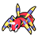
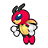
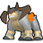
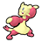

Pokémon
- Wild Amoonguss have a 50% chance of holding a TinyMushroom, a 5% chance of holding a Big Mushroom, and a 1% chance of holding a BalmMushroom (in dark grass only).
- Wild Lunatone have a 5% chance of holding a Moon Stone and a 1% chance of holding a Comet Shard (in dark grass only).
- Wild Solrock have a 5% chance of holding a Sun Stone and a 1% chance of holding a Comet Shard (in dark grass only).
- Wild Audino have a 50% chance of holding an Oran Berry and a 5% chance of holding a Sitrus Berry.
- Wild Emolga always hold a Cheri Berry.
- Wild Red-Striped Basculin have a 5% chance of holding a DeepSeaTooth.
- Wild Blue-Striped Basculin have a 5% chance of holding a DeepSeaScale.
Walking
Walking (dark grass)
Walking (shaking grass)
Swarm
During a swarm, the player has a 40% chance of encountering the swarming Pokémon, and a 60% chance that their encounter is taken from the normal encounter table.
| Pokémon | Games | Level | ||
|---|---|---|---|---|
|
 |
Ariados | B2 | W2 | lv. 40-55 |
|
 |
Ledian | B2 | W2 | lv. 40-55 |
Static
| Pokémon | Level | Notes | |
|---|---|---|---|
|
 |
Terrakion | 45 | If defeated or run from, it reappears at level 65 after defeating the Elite Four. |
 |
Amoonguss | 47 | Two total. Appear as regular item balls, but will attack when interacted with. |
Hidden Grotto
When a Hidden Grotto's contents regenerate, there is a 20% chance that it will contain a Pokémon. The following Pokémon may be encountered. All of them have their Hidden Ability.
| Pokémon | Rate | Levels | |
|---|---|---|---|
|
|
Amoonguss | 15% | lv. 40-45 |
| Pelipper | 4% | lv. 40-45 | |
|
 |
Mienfoo | 1% | lv. 50-55 |